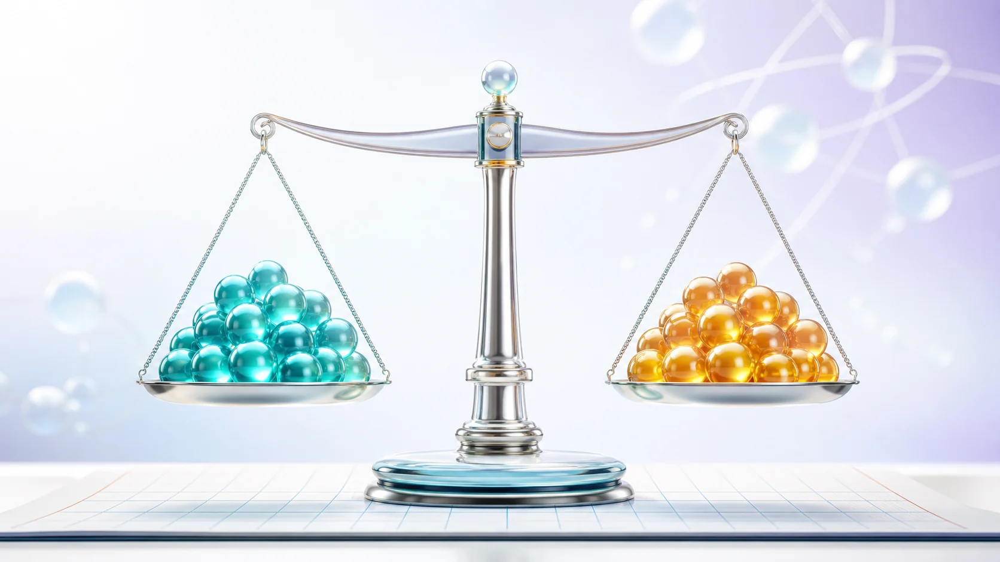
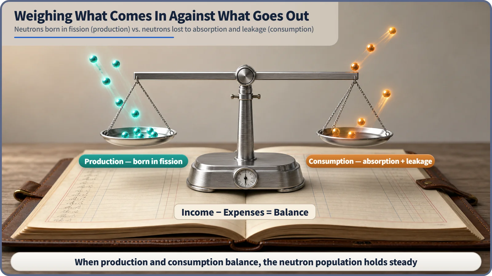
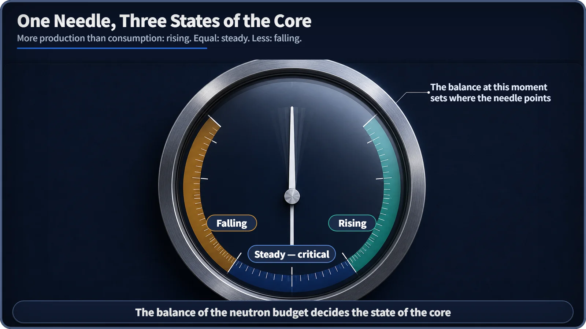

Neutron Physics & the Core · 076
In the Red or in the Black? — The Neutron Balance Running Inside Every Reactor Core
Production minus consumption decides whether the neutron population grows, holds steady or shrinks.

The neutron balance compares the neutrons born in fission inside a reactor core (production) with the neutrons lost to absorption and leakage (consumption). Production minus consumption decides whether the neutron population grows, holds steady or shrinks, and the steady, perfectly balanced state is what engineers call critical: normal operation, not an emergency.
A budget for the core
Ever opened a budgeting app? On payday your account looks healthy, and then the card bill and the utilities go out and the number shrinks fast. At the end of the month we all do the same sum: income minus spending. Did the balance go up or down?
That familiar feeling plays out almost exactly inside the core of a nuclear power plant, the part of the reactor where fission actually happens. What moves in and out of this account isn't money but an invisible particle called the neutron, and the sum that checks income against spending is called the neutron balance.
Payday for neutrons
A reactor core is packed with the nuclei of fuel such as uranium. When one of these nuclei absorbs a neutron, it splits in two. That's fission. Every time it happens, one neutron disappears, but on average 2 to 3 new neutrons fly out, like planting one seed and watching two or three sprouts come up in the same spot.
Across the whole core, countless fissions happen at every instant, producing a steady stream of new neutrons. That is the income line of the neutron budget: production, the salary that lands every month.

And there are always bills to pay
Not every neutron that's born survives long enough to cause another fission. The spending goes out through two main channels.
The first is absorption: a neutron runs into some material other than fuel (the coolant, the moderator, structural parts, or absorbers placed there on purpose, such as control rods or boron) and gets captured. The second is leakage: a neutron hits nothing at all and simply escapes through the outer edge of the core. One is like a card payment leaving your wallet; the other is like the whole wallet slipping out of your pocket.
Absorption plus leakage makes up the spending line: consumption. Comparing that income with that spending is the neutron balance.
Income minus spending, and what the balance decides
Production (neutrons born in fission) − Consumption (absorption + leakage) = Net change (how the neutron count shifts in the next moment)
| Balance | Comparison | Neutron population |
|---|---|---|
| In the black | production > consumption | grows |
| Exactly zero (critical) | production = consumption | stays the same |
| In the red | production < consumption | shrinks |
The word critical tends to sound like an emergency, but here it means the opposite. A reactor running normally at a steady power level is almost always critical, or very close to it.
There are ways to calculate this balance as an exact number, such as how many times larger the population gets or by what percentage it drops. That calculation belongs to another discussion; here the point is the budgeting principle itself.

Neighbors that are easy to mix up
Neutron balance is not neutron flux. Neutron flux measures how intensely neutrons stream past a particular spot and shows which locations in the core are busier. The neutron balance adds all of those streams together and asks a bookkeeping question: overall, did the count go up or down? It's like closing the month's budget and looking only at the final balance.
Neutron balance is not a conservation law. Unlike conservation of mass or energy, it doesn't always add up exactly. It is much more like a bank balance: a ledger that can change. Deciding which way to move that balance is a central concern of reactor design and operation.
How power plants manage the balance
At the design stage, engineers decide how much fuel to load and how enriched it is, which moderator and coolant to use, and where to place control rods and other absorbers, all to match income and spending with a chosen margin. During operation, inserting or withdrawing control rods and adjusting the boron concentration in the coolant deliberately raise or lower the spending side to move the balance. Raising or lowering reactor power is, in effect, adjusting the spending lines of the neutron budget.
It also connects to safety. When core temperature rises, absorption or leakage naturally increases, so the balance tips toward falling on its own. That built-in tendency works on top of the same balance framework; its detailed mechanism is a topic of its own.
Key takeaways
The neutron balance compares production (neutrons born in fission) with consumption (absorption plus leakage). Positive means the neutron count rises, zero means it holds steady (critical, normal operation), and negative means it falls. Reactor design, operation and safety all come back to how this balance is set and adjusted.